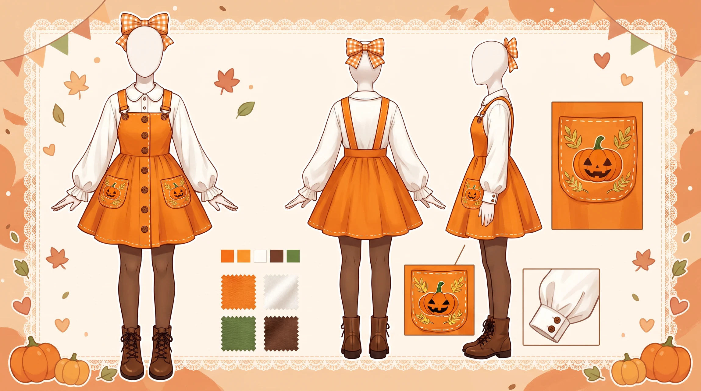
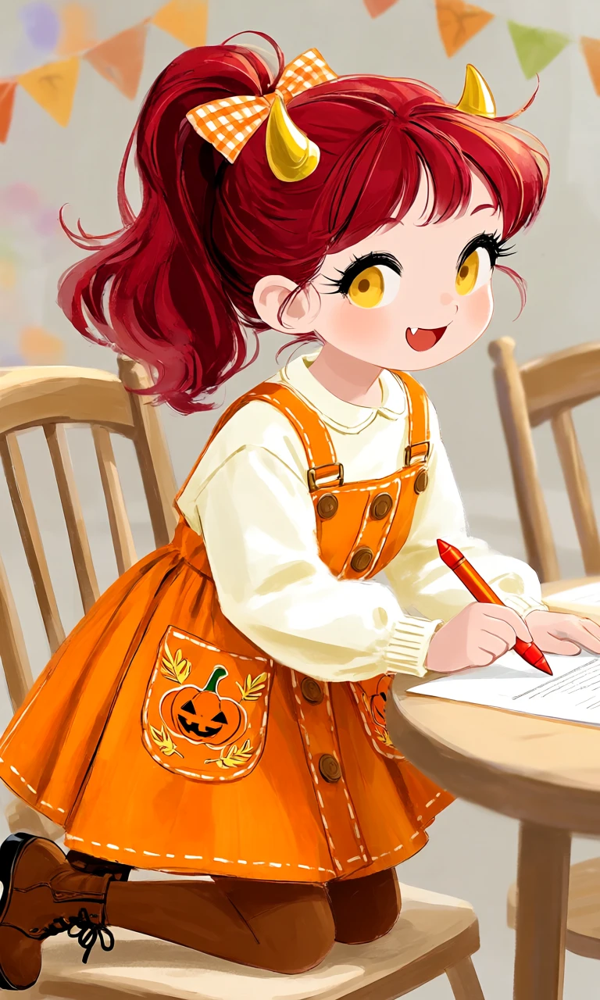

Pumpkin Pocket Darling

Outfit Prompt
A cheerful pumpkin-orange cotton corduroy pinafore dress with a gently gathered knee-length skirt, wide shoulder straps, rounded wooden buttons, and two large patch pockets embroidered with smiling pumpkins and little gold leaves. Layered over a warm cream long-sleeved jersey blouse with softly elasticated cuffs and a small rounded collar. Cinnamon-brown opaque tights, sturdy brown ankle boots with easy side fastenings, and a small orange gingham hair bow.
Outfit Examples

